Tecnología en Desarrollo de Medios Gráficos Visuales
Sustentación de condiciones de calidad para la autorización como Nuevo Lugar de Desarrollo en el Municipio de Itagüí — Centro Tecnológico del Mobiliario.
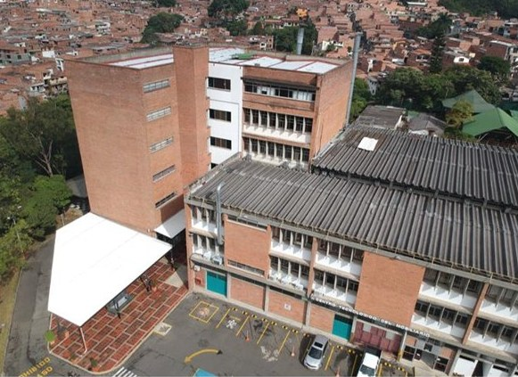
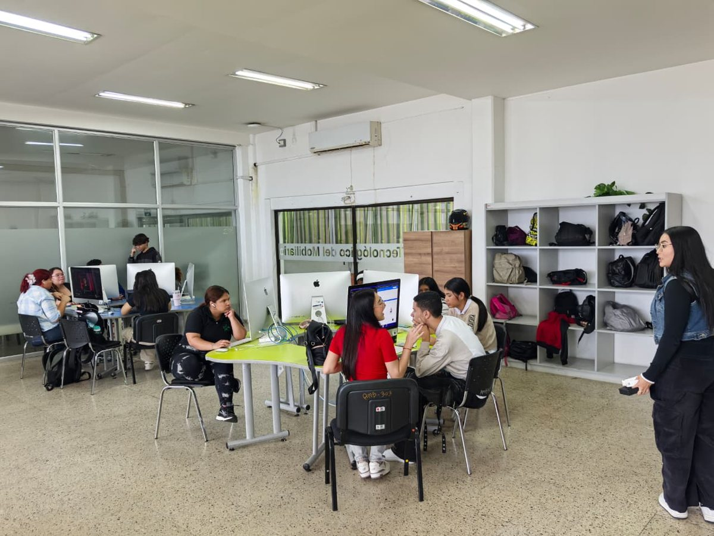
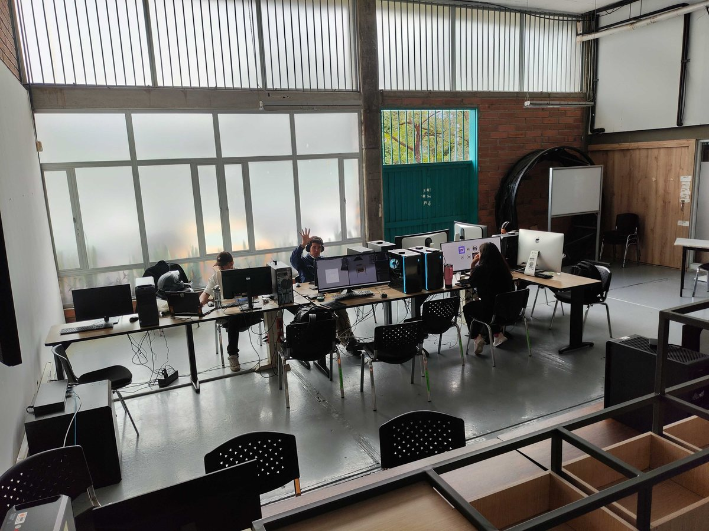
Mapa de las 9 Condiciones de Calidad Educativa
Haz clic en cualquier bloque para navegar directamente durante la visita de pares académicos
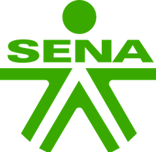
Contexto Institucional y CTM
SENA Nacional (33 Regionales, 118 Centros), Regional Antioquia (16 Centros) y trayectoria de +40 años del Centro Tecnológico del Mobiliario en Itagüí.
C1 Denominación del Programa
83 créditos, 3.984 h, CINE-F 0211, CUOC 31181 / CNO 5223, 9 NSCL, 26 centros de cobertura.
C2 Justificación Nacional e Itagüí
Pertinencia nacional, empleabilidad (75,3%) y sustento territorial Aburrá Sur (30.146 empresas).
C3 Aspectos Curriculares
Modelo FPI, perfil renovado con UX/UI e IA, 20 competencias, 9 trimestres y etapa productiva.
C4 Organización Académica
Proyecto Formativo GFPI-F-016, Planeación GFPI-F-134, Guías GFPI-F-135, evaluación y TyT.
Investigación
SENNOVA, Grupo MATERMOB (Cat. C), Semillero Clic Derecho y proyectos VR/IA.
Sector Externo
Mesas Sectoriales, Red Artes Gráficas (157 prog. SENA), Fondo Emprender (29 proy.) y Cadena IES.
Profesores
11 instructores reales DMGV (8 Prof., 2 Esp., 1 M.Sc.), perfil 522309 V2 y plan ENI.
Medios Educativos
Amb. 303 (24 iMacs), Amb. 107 (11 Workstations), Amb. 302, Biblioteca Sur y Suite Adobe.
Infraestructura
Conectividad 300Mb/30 APs, Accesibilidad, Plan Mtto \$2.023M y Video Recorrido CTM.
Servicio Nacional de Aprendizaje SENA y Regional Antioquia
Formación profesional integral gratuita orientada al desarrollo social, económico y tecnológico del país
Misión y Plan Estratégico Institucional
El SENA cumple la función del Estado de invertir en el desarrollo social y técnico de los trabajadores colombianos, ejecutando la Formación Profesional Integral para la incorporación productiva.
En cumplimiento de la Ley 152 de 1994, su Plan Estratégico Cuatrienal se articula con el Plan Nacional de Desarrollo mediante planes de acción anuales enfocados en calidad, pertinencia e inclusión.
Regional Antioquia · 16 Centros en 9 Subregiones
| Subregión | Centros de Formación |
|---|---|
| Valle de Aburrá (9 Centros) | Centro Tecnológico del Mobiliario (Itagüí), Diseño Confección y Moda, Diseño y Manufactura del Cuero, Comercio, Salud, Servicios y Gestión Empresarial, Manufactura Avanzada, Hábitat y Construcción, Textil y Gestión Industrial. |
| Oriente · Suroeste · Occidente | Innovación Agroindustria y Aviación (Rionegro), Recursos Naturales La Salada, Complejo Turístico y Agroindustrial Occidente. |
| Bajo Cauca · Urabá · Mag. Medio | Gestión Agroempresarial, Formación Minero Ambiental, Complejo Agroindustrial Urabá, Complejo Minero Agroempresarial. |
Centro Tecnológico del Mobiliario (CTM) — Itagüí
Más de 40 años formando talento humano para el Valle de Aburrá · Calle 63 # 58B-03, Barrio Calatrava
Origen Colombo-Canadiense
Nace como Centro Colombo Canadiense de la Madera en Calatrava (Itagüí) en Ebanistería, Tapicería y Acabados.
Centro Tecnológico
Evoluciona a CTM: nuevos materiales, diseño, investigación e Industria 4.0.
Centro Multisectorial
+1 millón de aprendices históricos, 177 instructores, 96 apoyo = 273 personas.
Matriculados CTM por Nivel y Modalidad (2024)
Total: 39.823 aprendices| Nivel de Formación y Modalidad | Matriculados 2024 | Participación |
|---|---|---|
| Complementaria Presencial | 14.679 | 36,9 % |
| Complementaria Virtual | 17.764 | 44,6 % |
| Subtotal Formación Complementaria | 32.443 | 81,5 % |
| Tecnólogo Presencial y a Distancia (2.501) + Virtual (1.251) | 3.752 | 9,4 % |
| Técnico Presencial (3.254) + Virtual (325) + Auxiliar (49) | 3.628 | 9,1 % |
| TOTAL MATRICULADOS CTM (7.380 Titulada + 32.443 Comp.) | 39.823 | 100 % |
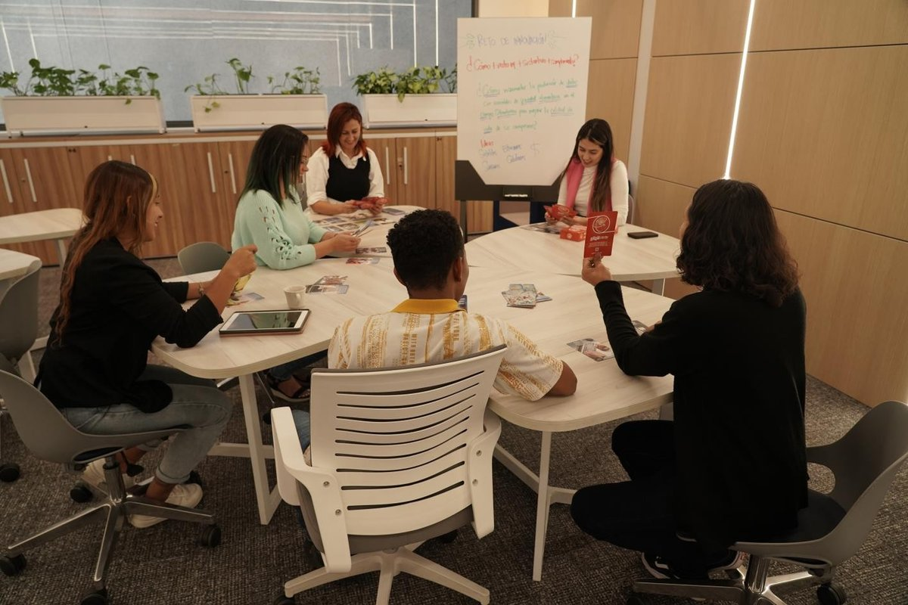
Ecosistema de Innovación, Diseño y Bienestar al Aprendiz
Sinergia entre tecnología, diseño, prototipado, investigación y acompañamiento socioeducativo
Tecnoacademia Itagüí
Escenario dotado de tecnologías emergentes para educación básica y media en 5 líneas: Tecnologías Virtuales, Electrónica y Robótica, Diseño e Ingeniería, Nanotecnología y STEAM.
Hub de Innovación & CLT
Acompañamiento a proyectos de transformación digital, realidad virtual, agentes IA y Sistema Constructivo en Madera Laminada Cruzada (CLT) con paneles modulares sostenibles.
Laboratorio de Ensayos
Servicios tecnológicos acreditados para empresas en tres líneas: Recubrimientos con Pintura, Ensayos para Mobiliario y Ensayos para Madera + Mesa Sectorial Diseño & Mobiliario.
Articulación Curricular DMGV
Participación directa del CTM en la asesoría metodológica del Diseño Curricular DMGV + trayectoria consolidada en líneas de Diseño, Mobiliario y TIC (virtual/presencial).
Bienestar Integral al Aprendiz (PNIBA 2025)
Retención y EquidadOrganización Académico-Administrativa CTM
- Subdirección y Coordinación Misional / Académica: Direccionamiento estratégico, seguimiento al proyecto formativo y gestión curricular en líneas medular, técnica y administrativa.
- SIGA y Administración Educativa: Control de calidad institucional, matrícula, certificación y registro en Sofía Plus / CompromISO.
- Relaciones Corporativas y Mesa Sectorial: Enlace directo con el tejido empresarial del Aburrá Sur, contrato de aprendizaje y Certificación de Competencias Laborales.
- Producción de Centros y SENNOVA: Proyectos aplicados reales, SENA Proveedor SENA y Semilleros de Investigación.
Denominación del Programa
Identificación oficial ante el MEN, estructura de créditos y horas, cobertura nacional en 26 centros, alineación ocupacional CUOC/CNO y matriz de 9 Normas Sectoriales.
Generalidades del Programa Académico
Identificación oficial ante el Ministerio de Educación Nacional y el Sistema Nacional de Formación para el Trabajo
Tecnología en Desarrollo de Medios Gráficos Visuales
Título otorgado: Tecnólogo en Desarrollo de Medios Gráficos Visuales · Modalidad Presencial.
Etapa lectiva: 3.120 h (65 cr.) + Etapa productiva: 864 h (18 cr.).
Resoluciones: Res. 9872 / Res. 15878 de 2020 (MEN).
SNIES: 109844 / 109872 · Radicado: RD34720
Código SOFIA Plus: 522309 Versión 2.
Red de Artes Gráficas
Norma de creación: Resolución 2423 de 2018 (DFP – SENA). Línea Tecnológica: Diseño · Sector: Industria.
Campo 02 Artes · Detallado 0211
Técnicas audiovisuales y producción para medios de comunicación. Coherencia internacional de nomenclatura.
Unifica producción gráfica impresa, editorial, empaques, fotografía, video y diseño de interfaces UI/UX.
Lugares de Desarrollo y Alineación Ocupacional (CUOC & CNO)
Articulación entre el Lugar de Desarrollo Principal (CENIGRAF) y la ampliación de cobertura hacia Itagüí (CTM)
CENIGRAF — Bogotá D.C.
Centro para la Industria de la Comunicación Gráfica (Calle 15 No. 31-42). Laboratorios de preprensa, impresión offset/digital, fotografía y UI/UX. Capacidad estándar: 30 aprendices/grupo.
Ampliación de Cobertura · 26 Centros Regionales
Anexo 1 AvalesJerarquía Ocupacional (CUOC DANE 2023 & CNO SENA)
Correspondencia exacta entre la denominación y la estructura del mercado laboral colombiano:
Composición, artes finales, ilustración, pruebas de color, diseño editorial y asistencia técnica gráfica.
Marco Nacional de Cualificaciones: resuelve problemas complejos y gestiona flujos gráficos digitales.
9 Normas Sectoriales (NSCL) y Referenciación Competitiva
41 Resultados de Aprendizaje específicos articulados con referentes nacionales e internacionales (SNIES 2026)
Ilustración & Editorial
12 RAPs- Ilustración Análoga / Digital: Representar conceptos gráficos según metodologías.
- Diagramación Editorial: Diagramar piezas gráficas según métodos de diseño y proyecto.
- Enfoque: Brief, composición, maquetación digital y preimpresión.
Empaques & Fotografía
16 RAPs- Fotografía Publicitaria & Retoque Digital: Captura, iluminación y edición de imagen.
- Estructura 3D & Artes Finales: Diseñar y elaborar sistemas de empaque según material y cliente.
- Enfoque: Planos mecánicos, prototipado 2D/3D y pruebas técnicas.
Digital, Video & UI/UX
13 RAPs- Contenido Digital / RRSS: Elaborar contenido visual digital estratégico.
- Edición Audiovisual: Editar contenido audiovisual según parámetros técnicos.
- Interfaces UI/UX: Diseñar interfaz gráfica de usuario y prototipos interactivos.
Referentes Nacionales (SNIES 2026)
| Institución | Programa Afín | Créd. | Mod. |
|---|---|---|---|
| UNITEC (Bogotá) | Tec. Producción Gráfica Digital | 101 | Presencial |
| CUN (Bogotá) | Tec. Expresión Gráfica y Publicaciones | 102 | Virtual |
| F. U. San Mateo | Tec. Desarrollo Prod. Gráfica y Digital | 124 | Presencial |
| Salazar y Herrera (Med.) | Tecnología en Diseño Gráfico | 105 | Presencial |
| SENA · DMGV | Tec. Desarrollo Medios Gráficos Visuales | 83 | Presencial · Gratuita |
Referentes Internacionales (EFTP · Industria 4.0)
Design Gráfico Técnico (1.200 h) · Producción gráfica industrial y edición digital.
Diseño Gráfico Profesional (412 SCT) · Representación gráfica con software especializado.
Gráfica Publicitaria (120 ECTS) · Tipografía, ilustración digital y postproducción.
TSU Diseño Asistido · Material gráfico digital, modelado 2D/3D y soporte técnico.
Ventaja SENA: Unifica producción impresa, empaques, audiovisual e interfaces UI/UX en 27 meses, con gratuidad pública y formación práctica intensiva.
Justificación del Programa y del Nuevo Lugar de Desarrollo
Sustento normativo, pertinencia nacional en la industria gráfica y demostración socioeconómica del porqué ofertar DMGV en el Municipio de Itagüí y el Aburrá Sur.
Marco Normativo, Plan Nacional de Desarrollo y Convergencia Gráfica
Respuesta directa a la transformación productiva, digitalización de micronegocios y modernización industrial
- Ley 30 de 1992
- Decreto 1075 de 2015 y Decreto 1330 de 2019
- Acuerdo 009 de 2024
- Resolución 1041 de 2026
Convergencia Técnica de la Industria Gráfica (ANDIGRAF 2023–2024)
El sector productivo transita hacia flujos de trabajo híbridos que combinan salida física industrial, empaques y activos digitales con inteligencia artificial:
Empaques, cartón corrugado, plegadizo y publicaciones comerciales.
Termoencogibles, empaques flexibles y alta tirada industrial.
Etiquetas personalizadas, gran formato y multicanalidad digital.
Desafíos Estratégicos que Atiende DMGV
- Mesa Sectorial Comunicación Gráfica & ANDIGRAF: Validación continua de competencias laborales junto a empresas aliadas (Offset Gráfico, Visión Gráfica, Impresos JC).
- Soberanía Tecnológica (Prospectiva 2030): Uso ético y productivo de Inteligencia Artificial, realidad aumentada y automatización para potenciar al tecnólogo sin desplazamiento laboral.
- Economía Popular (CONPES 2023): Profesionalización de identidad visual, branding y comercio digital para MiPymes y emprendimientos locales.
- Reducción de Pobreza Multidimensional: Inserción rápida en empleo formal calificado y modelos freelance/remotos.
Matrícula Tecnológica, Empleabilidad y Brecha de Cobertura
Alta demanda insatisfecha de aspirantes y sólida inserción laboral sustentan la apertura en nuevos territorios
Evolución de Matrícula Tecnológica (MEN – SNIES 2022–2024)
Demanda de Aspirantes y Eficiencia Formativa
Con una brecha de acceso del 86,4% de aspirantes sin cupo en Bogotá y una demanda transversal en retail, banca, manufactura y economía creativa, descentralizar DMGV hacia Itagüí (Antioquia) responde a una necesidad real y urgente del país.
¿Por qué Ofertar DMGV en Itagüí y el Valle de Aburrá Sur?
Relación vinculante geográfica, económica y social del Centro Tecnológico del Mobiliario con su territorio
Estructura Empresarial de Itagüí y Aburrá Sur (CCAS 2024)
Tejido empresarial dinámico que demanda diseño gráfico, branding, empaques, catálogos, contenido digital y UX/UI:
Vocaciones Económicas y Demanda Local para DMGV
- Industria Manufacturera y Mobiliario: Textil, confección, alimentos, plásticos, metalmecánica y madera requieren diseño de empaques, catálogos técnicos, fotografía de producto y señalética.
- Comercio y MiPymes (+34% unidades de 1–4 empleos): Necesitan identidad visual, piezas promocionales, redes sociales y comercio electrónico para ser competitivas.
- Servicios Profesionales, Científicos y Técnicos: Crecieron +34% entre 2016 y 2024 (+22% vs prepandemia), impulsando agencias y estudios creativos.
- Servicios Administrativos y Tercerización: Incremento del +93% en registros mercantiles desde 2016 (1.627 registros), abriendo oportunidades de emprendimiento gráfico independiente.
- Infraestructura y Renovación Urbana: Proyectos viales y urbanísticos demandan comunicación visual, infografía y estrategias multicanal.
Pertinencia en Antioquia y Alineación con Planes de Desarrollo
Coherencia directa con las metas nacionales, departamentales y del Municipio de Itagüí
PND 2022–2026 · Eje Antioquia
“Colombia, Potencia Mundial de la Vida”: Estrategia regional Capital humano innovador en territorios incluyentes. Aporta a la transformación productiva, justicia social y cierre de brechas digitales.
Plan “Antioquia Firme”
Impacta directamente la línea Educación Pertinente y de Calidad y las metas de Cohesión Social, Inversión desde la Confianza e Industria, Innovación e Infraestructura.
“Ciudad de Oportunidades”
Articulación total con la Línea Estratégica 17: Educación con Calidad, garantizando trayectorias educativas pertinentes desde la media hasta la educación superior tecnológica gratuita.
Indicadores de Pertinencia en Antioquia
7 Pilares de Pertinencia Educativa en Itagüí
Habilidades directamente transferibles al clúster comercial e industrial del Aburrá Sur.
Elimina barreras económicas para jóvenes bachilleres de comunas urbanas y veredas.
El SENA es referente exclusivo en esta denominación tecnológica orientada por competencias y proyectos.
Integración con empresas patrocinadoras mediante contrato de aprendizaje y pasantías.
Pensamiento crítico, comunicación, ética, cultura emprendedora y trabajo en equipo.
Producción gráfica responsable, ecodiseño de empaques y normatividad SST.
Factores Diferenciales y Justificación de la Modalidad Presencial
Infraestructura de simulación real, acompañamiento experto y gratuidad bajo estándares de la industria
Estaciones de Alto Rendimiento
El procesamiento de artes finales, fotografía, video y prototipado exige estaciones calibradas (24 iMacs 32" UHD + 11 Workstations Alienware/HP Z4), software licenciado y crítica constructiva en taller.
Vínculo Real y Contrato de Aprendizaje
Articulación con empresas del Aburrá Sur y Red de Artes Gráficas, llevando el aprendizaje desde la simulación en laboratorio hasta 864 horas de etapa productiva real.
Calidad ISO 12647 y Prototipado
Gestión del color, preprensa y acceso complementario a 4 Impresoras 3D, 2 Cortadoras Láser, 3 Scanners 3D y 3 Visores VR para prototipos de empaque y diseño visual.
Formación Pública 100% Gratuita
Sin costo de matrícula, con 83 créditos eficientes (vs. 100–124 en IES privadas), materiales de formación incluidos y programa robusto de Bienestar al Aprendiz.
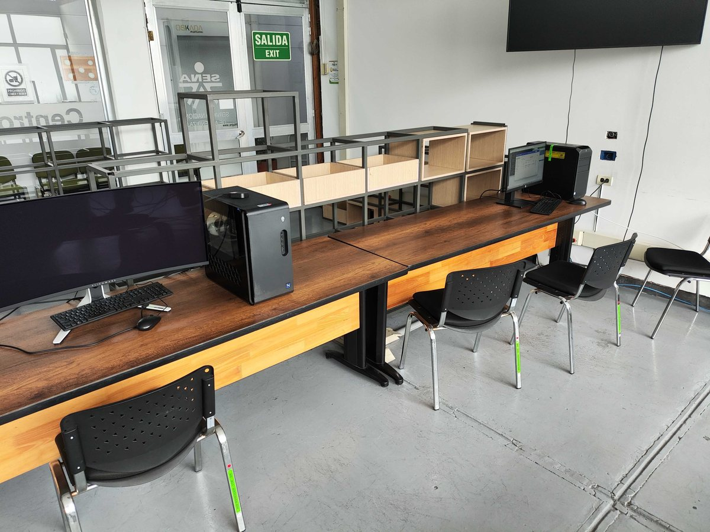
Aspectos Curriculares
Modelo Pedagógico de la Formación Profesional Integral (FPI), perfiles renovados de ingreso y egreso, plan de 20 competencias, malla de 9 trimestres e internacionalización.
Modelo Pedagógico FPI y Estructura del Diseño Curricular
Formación teórico-práctica, interdisciplinaria y articulada por competencias laborales (NSCL) y proyectos
Marco Institucional FPI
Estatuto de la FPI (Acuerdo 008/1997), Proyecto Educativo Institucional (PEI) y Plan Estratégico SENA 2023–2026. 1 crédito = 48 horas.
Enfoque por Proyectos
Diseño curricular basado en NSCL, Proyecto Formativo integrador, Planeación Pedagógica, Guías de Aprendizaje, RAPs y Etapa Productiva.
Contexto y Globalidad
Vinculación con el entorno productivo, competencia de bilingüismo (384 h inglés), WorldSkills y certificaciones internacionales.
Pilares del Modelo Pedagógico SENA
Desarrollo humano integral que articula lo cognitivo, procedimental y actitudinal:
Distribución de Créditos y Horas (83 Créditos · 3.984 Horas)
| Etapa / Componente | Duración | Horas | Créditos |
|---|---|---|---|
| Etapa Lectiva (Trabajo Directo 80%: 2.496 h · Autónomo 20%: 624 h) | 7 trimestres (21 m) | 3.120 h | 65 cr. |
| Etapa Productiva (Aplicación en entorno empresarial real) | 2 trimestres (6 m) | 864 h | 18 cr. |
| GRAN TOTAL DEL PROGRAMA | 9 trimestres (27 m) | 3.984 h | 83 cr. |
Perfil de Ingreso, Egreso y Evolución del Tecnólogo DMGV
Triangulado con el sector productivo (Imprenta Nacional, Politécnico Grancolombiano, Infinito PCM) y el PEI SENA
Reestructuración del Perfil de Egreso
Agente de apoyo operativo en la elaboración de soluciones gráficas tradicionales: identidad de marca, empaques y editorial básico.
Tecnólogo autónomo que analiza, conceptualiza, diseña y produce soluciones visuales impresas, digitales e interactivas, integrando UX/UI, IA responsable y sostenibilidad.
Desempeño Ocupacional (CNO 5223 · CUOC 31181)
16 Roles LaboralesProyección: Agencias de publicidad, editoriales, imprentas, productoras audiovisuales, áreas de mercadeo de empresas manufactureras/comerciales y estudios propios de emprendimiento creativo.
- Nivel académico: Título de Educación Media (Bachiller, Grado 11) y presentación de pruebas Saber 11 (ICFES).
- Edad y experiencia: Mínimo 16 años · No requiere experiencia laboral previa.
- Conocimientos base: Manejo de herramientas ofimáticas básicas y superación de pruebas de selección SENA.
- Inclusión (Ley 1346/2009): Admisión equitativa con ajustes razonables y herramientas de accesibilidad (JAWS/ZoomText).
Entregables del Egresado
Competencias Específicas, Clave y Transversales
Explora por categoría las normas sectoriales (NSCL), horas y créditos oficiales del programa DMGV
| Código NSCL | Denominación de la Competencia Específica | Créditos | Horas |
|---|---|---|---|
| 291301121 | Representar conceptos gráficos de acuerdo con metodologías de ilustración | 9 | 432 h |
| 291301122 | Diagramar piezas gráficas de acuerdo con métodos de diseño y proyecto | 16 | 768 h |
| 291301080 | Registrar imágenes publicitarias de acuerdo con métodos de captura fotográfica | 1 | 48 h |
| 291301083 | Editar imágenes de acuerdo con criterios de comunicación y edición | 3 | 144 h |
| 291301140 | Elaborar empaque de acuerdo con tipo de material y requerimiento técnico | 2 | 96 h |
| 291301088 | Diseñar sistema de empaque de acuerdo con requerimientos del cliente | 3 | 144 h |
| 291301139 | Elaborar contenido visual digital de acuerdo con parámetros de redes sociales | 4 | 192 h |
| 250201030 | Editar contenido audiovisual de acuerdo con parámetros técnicos | 4 | 192 h |
| 291301119 | Diseñar interfaz gráfica de usuario (UI) de acuerdo con metodologías | 4 | 192 h |
| TOTAL COMPETENCIAS ESPECÍFICAS (9 NSCL · Red de Artes Gráficas) | 46 cr. | 2.208 h | |
| Código NSCL | Competencia Clave (Integralidad SENA) | Créditos | Horas |
|---|---|---|---|
| 240201524 | Desarrollar procesos de comunicación eficaces y efectivos, teniendo en cuenta situaciones de orden social, personal y productivo. | 4 | 192 h |
| 230101507 | Generación de hábitos saludables de vida mediante la aplicación de programas de Actividad Física en contextos productivos y sociales. | 1 | 48 h |
| 240201529 | Gestionar procesos propios de la cultura emprendedora y empresarial de acuerdo con el perfil personal y requerimientos productivos. | 1 | 48 h |
| 240201526 | Interactuar en el contexto productivo y social de acuerdo con principios éticos para la construcción de una cultura de paz. | 1 | 48 h |
| SUBTOTAL COMPETENCIAS CLAVE (+ Inducción Institucional 240201530) | 7 cr. | 336 h | |
| Código NSCL | Competencia Transversal | Créditos | Horas |
|---|---|---|---|
| 240202501 | Bilingüismo – Inglés: Interactuar en lengua inglesa de forma oral y escrita dentro de contextos sociales y laborales (MCER). | 8 | 384 h |
| 240201517 | Razonar cuantitativamente frente a situaciones matemáticas en contextos laborales, sociales y personales. | 1 | 48 h |
| 220201501 | Aplicación de conocimientos de las ciencias naturales (física/química) de acuerdo con situaciones del contexto productivo. | 1 | 48 h |
| 220501046 | Utilizar herramientas informáticas (TIC e IA) de acuerdo con necesidades de manejo de información. | 1 | 48 h |
| 220601501 | Aplicar prácticas de protección ambiental, seguridad y salud en el trabajo (SST) según normatividad vigente. | 1 | 48 h |
| 240201064 | Orientar investigación formativa según referentes técnicos (articulada a SENNOVA y Semillero Clic Derecho). | 1 | 48 h |
| 210201501 | Ejercer los derechos fundamentales del trabajo de acuerdo con la Constitución Política y convenios internacionales. | 1 | 48 h |
| SUBTOTAL COMPETENCIAS TRANSVERSALES (7 Normas) | 14 cr. | 672 h | |
Planeación por Trimestres, Etapa Productiva e Internacionalización
Progresión curricular de 27 meses en 4 fases del proyecto formativo + 7 modalidades de práctica real
7 Modalidades de Etapa Productiva (864 h · 18 Créditos)
Internacionalización y Segunda Lengua
- WorldSkills (2023–2025): Apropiación de estándares internacionales de competición en Diseño Gráfico y Medios Visuales dentro de la formación.
- Certificación Internacional Adobe: Preparación y validación de destrezas en herramientas estándar globales de la industria creativa.
- Alianza Google · Talento ColombIA (IA): Integración de competencias de inteligencia artificial aplicada.
- Bilingüismo (384 horas · 8 créditos): Inglés transversal a lo largo de los trimestres I a VII bajo el Marco Común Europeo (MCER).
Organización de las Actividades Académicas
Operacionalización del diseño curricular en el aula: pilares formativos, planeación pedagógica, guías de aprendizaje, mecanismos de evaluación y trámites de certificación.
Pilares Formativos y Proyecto Formativo (GFPI-F-016)
Núcleo dinamizador de la Formación Profesional Integral orientado a resolver retos reales de comunicación visual
Teórico-Práctico
Comprensión de movimientos del arte, estilos compositivos y fundamentos del diseño aplicados en bitácoras y talleres análogos/digitales.
Colaboración
Análisis en parejas de piezas visuales, crítica constructiva argumentada y co-creación de campañas gráficas reales.
Tecnología e IA
Incorporación ética de inteligencia artificial para exploración de referentes, alternativas creativas y automatización de flujos.
Autonomía
Muros colaborativos, aprendizaje autorregulado (20% TTA) y construcción de portafolio profesional con criterio propio.
“Diseño y producción de soluciones de comunicación gráfica para medios impresos, digitales y audiovisuales según necesidades del cliente y contexto productivo”
Objetivos específicos por fase:
- 1. Analizar y Conceptualizar: Investigar requerimientos del brief y necesidades de comunicación visual.
- 2. Planear: Diseñar propuestas gráficas aplicando fundamentos de diseño y estrategias comunicativas.
- 3. Ejecutar: Producir piezas para medios impresos, digitales y multimediales con software especializado.
- 4. Evaluar: Validar productos visuales con criterios técnicos, funcionales y de experiencia de usuario (UX).
Principios del Aprendizaje (PEI SENA)
Resolver problemas cuantitativos del contexto productivo y alistar herramientas TIC e IA para el procesamiento de información.
Interpretar el brief del cliente y estructurar propuestas gráficas completas cumpliendo parámetros técnicos de impresión y salida digital.
Ergonomía y pausas activas en taller, ética profesional, respeto a derechos de autor y construcción de relaciones para el bien común.
Planeación Pedagógica, Guías de Aprendizaje y Evaluación
Trazabilidad completa desde el diseño curricular hasta la evidencia evaluada en ambiente de formación
Diseño Curricular
DMGV · Cód. 522309 V2 · 20 Competencias
Proyecto Formativo
GFPI-F-016 · 4 Fases · 86 RAPs
Planeación Pedag.
GFPI-F-134 · Didácticas, tiempos y ambientes
Guías Aprendizaje
GFPI-F-135 v04 · 5 momentos didácticos
Instrumentos Eval.
Listas de chequeo, rúbricas y cuestionarios
5 Momentos de la Guía de Aprendizaje (GFPI-F-135 · Ejemplo 96 h)
Mecanismos y Tipos de Evidencia
Estudios de caso, teoría del color, armonías cromáticas, historia del arte y cuestionarios de brief.
Observación directa en taller de bocetación, ilustración, fotografía, diagramación y uso de software.
Bitácoras, piezas editoriales, artes finales, prototipos de empaque, interfaces UI y portafolio digital.
Entorno de Interacción, Seguimiento y Requisitos de Certificación
Garantía de trazabilidad académica, acompañamiento en etapa productiva y cumplimiento de requisitos MEN/SENA
Mecanismos de Interacción y Normatividad
- Espacios Digitales Integrados: LMS Zajuna, Biblioteca Digital SENA, Microsoft Teams, Drive institucional y tableros colaborativos de retroalimentación visual.
- Escenarios de Intercambio Disciplinar: Open House Andigraf, Festivales de Fotografía y Animación, Congreso Internacional de Innovación y Competitividad (
+moben CTM). - Proyección Social (Campesena): Proyectos formativos de diseño e identidad visual al servicio de emprendimientos rurales y economía popular.
- Marco Reglamentario: Socialización en inducción del Acuerdo 007 de 2012 (Reglamento del Aprendiz SENA) articulado con la Resolución 2198 de 2019.
Portafolio de evidencias verificado por el instructor · Juicios cualitativos procesuales · Seguimiento quincenal en empresa mediante bitácoras y Formato GFPI-F-023.
Requisitos de Certificación del Tecnólogo DMGV
Adicional a la aprobación del 100% de los 83 créditos (3.984 horas):
Investigación, Innovación y Creación
Capacidades reales de CTeI del Centro Tecnológico del Mobiliario: Sistema SENNOVA, Grupo MATERMOB (Cat. C), Semillero CLIC DERECHO, equipo investigador y proyectos ejecutados.
Sistema SENNOVA y Grupo de Investigación MATERMOB
Investigación aplicada y creación visual articuladas con el Plan Tecnológico a 10 años del CTM Itagüí
MATERMOB · Categoría C · Código COL0113975
Línea: “Diseño, desarrollo y mejoramiento de materiales, productos y procesos” — incorpora la línea TIC y Tecnología en Desarrollo de Medios Gráficos Visuales.
¿Qué es SENNOVA y cómo se articula con DMGV?
SENNOVA es el Sistema de Investigación, Innovación y Desarrollo Tecnológico del SENA (Ley 119/1994, Acuerdo 10/2024 y Res. 01979/2012) que fortalece capacidades locales de CTeI y transferencia tecnológica.
Cultura de innovación y fomento tecnológico en empresas del Aburrá Sur.
Semilleros en centro y competencia 240201064 de investigación formativa.
Articulación con Tecnoparque, Tecnoacademia Itagüí y Servicios Tecnológicos.
Actualización de laboratorios como MediaLab 107 y gestión del conocimiento.
Plan Tecnológico CTM · Horizonte a 10 Años
Vigilancia tecnológica y prospectiva (PREVIOS) para alinear la investigación y oferta del CTM en Itagüí:
- 1. Análisis Estratégico Continuo: Identificación de brechas, retos y tendencias en diseño, medios visuales e industria 4.0.
- 2. Plan Vigía: Toma de decisiones sobre variables estratégicas, IA generativa, realidades extendidas y sostenibilidad.
- 3. Construcción de Futuro I+D+i: Proyectos interdisciplinarios que conectan aprendices DMGV con instructores investigadores y el Hub de Innovación.
240201064 → Proyecto Formativo DMGV → Fase Análisis y Planeación → Guía de Aprendizaje → Semillero Clic Derecho.
Semillero CLIC DERECHO y Red de Semilleros del CTM
Investigación formativa y creación visual aplicada al programa Tecnología en Desarrollo de Medios Gráficos Visuales
Semillero CLIC DERECHO
Semillero de Contenidos Digitales del Grupo MATERMOB, integrado por instructores investigadores y aprendices comprometidos con resolver problemáticas reales en Diseño, Artes Gráficas, Multimedia, Realidades Extendidas e Inteligencia Artificial, mediante análisis crítico, prototipado y trabajo de campo.
- Diseño visual, identidad de marca, UX/UI y narrativas transmedia aplicadas al entorno productivo.
- Integración de Inteligencia Artificial y Realidad Virtual (VR/AR) en contenidos formativos e industriales.
- Participación en ponencias nacionales, congresos (
+mob) y publicación de resultados.
Ecosistema Interdisciplinario · Semilleros CTM
El CTM articula todos sus programas de formación a través de semilleros activos bajo el Grupo MATERMOB:
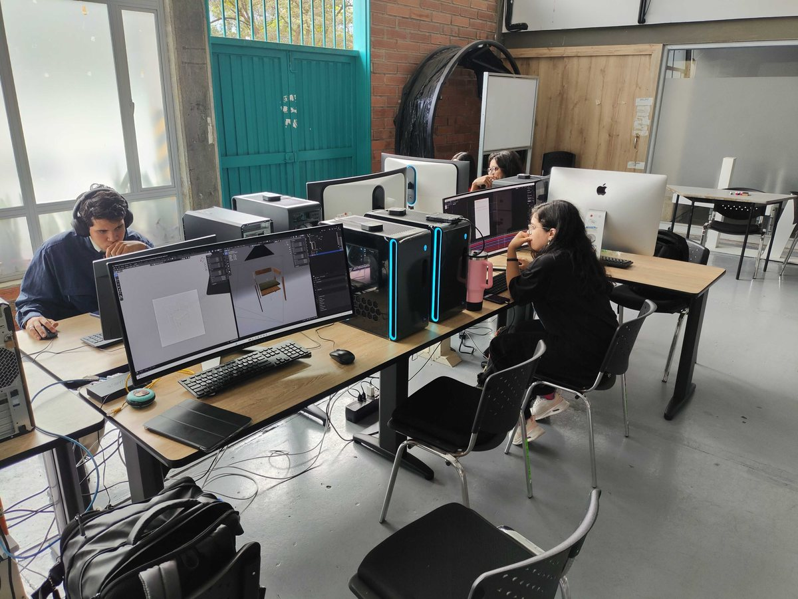
Equipo Investigador y Recursos Destinados al Programa
Dedicación formal de tiempo y recursos físicos/tecnológicos del CTM Itagüí (Anexo 5_9205)
Talento Humano Dedicado a Investigación (Anexo 5_9205)
| Rol en CTeI | Nombre | Vinculación | % Inv. |
|---|---|---|---|
| Líder / Dinamizador SENNOVA | Catherine Andrea Caicedo Perea | Planta Temporal | 100 % |
| Dinamizador SENNOVA | Sebastián Tobón Rojas | Planta Temporal | 50 % |
| Instructor Inv. & Líder Semillero | Alex Fernando Zapata Ríos | Planta (DMGV) | 50 % |
| Instructor Investigador | Madeleine Martínez Zúñiga | Contratista (DMGV) | 20 % |
| Instructor Investigador | Alexander Espinosa Montoya | Contratista (DMGV) | 20 % |
| Instructora Investigadora | Gloria Eugenia Sánchez | Planta | 10 % |
| Líderes de Semilleros | Sebastián Vélez Vasco · Juan Camilo Chavarría | Contratistas | 10 % c/u |
Ambientes e Insumos para Investigación
| Recurso / Ambiente | Inversión / % Centro | % Prog. DMGV |
|---|---|---|
| Ambiente MediaLab 107 | 5 % CTM | 30 % |
| 27 Computadores Ambiente 204 | $16.864.349 | 10 % |
| Software Power BI | $30.232.468 | 5 % |
| Materiales de Formación | 10 % CTM | 10 % |
| Biblioteca, Bases de Datos e Impresos | 10 % CTM | 10 % |
| Mobiliario Ambiente 204 | $819.680 | 10 % |
Producción Bibliográfica y Divulgación CTM
- Investigación e innovación en el CTM a través de semilleros
- Impacto de la 4ª Revolución Industrial en la Industria del Mobiliario
- Estudio Prospectivo Sector Mobiliario en Colombia 2030
- Congreso +mob: Construyendo el Futuro de la Industria
Proyectos de I+D+i y Logros Tecnológicos del CTM
Más de $497 millones movilizados en proyectos SENNOVA y transferencia con participación de aprendices y Semillero Clic Derecho
Realidades Extendidas (Simulador VR)
Desarrollo de Simulador VR de corte láser para la formación y la construcción. Articula modelado 3D, diseño visual de interfaces inmersivas y pruebas con lentes Oculus Quest 3s.
Agentes IA para Instructores CTM
Automatización de procesos académicos con inteligencia artificial (incluye modelo de interacción LIA:IA con ponencia nacional). Co-desarrollado con aprendices, Hub de Innovación y Semillero Clic Derecho.
Proyecto MADERTEC
Solución tecnológica integral para el ecosistema productivo del mobiliario con diseño gráfico, interfaz digital y validación junto a asesores del Hub de Innovación y Semillero Clic Derecho.
Sistema de Gestión de Equipos CTM
Plataforma interactiva para trazabilidad, préstamo y mantenimiento de equipos tecnológicos del centro, con participación de aprendices de diseño/multimedia e instructores investigadores.
Ambientes Modulares en CLT
Construcción de ambientes portables en Madera Laminada Cruzada (paneles tipo LEGO 240×60×6,8 cm) integrando sostenibilidad, IoT y diseño industrial.
App Turismo Itagüí
Aplicación digital de promoción territorial en alianza directa con la Alcaldía de Itagüí, potenciando identidad visual, contenidos multimedia y experiencia de usuario local.
MOBS (LEGO/Mindstorm) · Programación Banco de Pruebas · Sistema IoT sostenible para ambientes modulares · Eventos de Divulgación Tecnológica (EDT).Relación con el Sector Externo
Articulación del CTM con el ecosistema productivo y educativo del Valle de Aburrá: Mesas Sectoriales, Red de Artes Gráficas, Fondo Emprender, Articulación Media y Cadena IES.
Mesas Sectoriales y Red de Conocimiento en Artes Gráficas
Articulación de instructores y aprendices con la dinámica productiva, comercial, creativa y cultural del Valle de Aburrá
Red de Conocimiento Sectorial: Artes Gráficas
100% Alineado DMGVEl programa Tecnología en Desarrollo de Medios Gráficos Visuales pertenece a la Red de Conocimiento en Artes Gráficas, cuyas soluciones visuales son transversales e impactan múltiples sectores productivos del Área Metropolitana:
Mesas Sectoriales · Antioquia (13 de 84 Nacionales)
Acuerdo 003/2018Espacio tripartito (Gobierno, Sector Productivo y Academia) para normalización y certificación de competencias laborales. El CTM ejerce la Secretaría Técnica de Diseño y Mobiliario (34 NSCL vigentes) y se articula con la Mesa de Industria de la Comunicación Gráfica.
Certificación de Competencias Laborales: Reconocimiento formal al talento empírico de empresas del Aburrá Sur.
Transferencia Tecnológica, UAIE y Fondo Emprender en Itagüí
Fomento de unidades productivas creativas, capital semilla y fortalecimiento a MiPymes del Aburrá Sur
Plan de Emprendimiento y Empresarismo CTM (Anexo 6_9205)
| Línea de Atención | Duración | Periodicidad | Metodología |
|---|---|---|---|
| Ruta de Entrenamiento Diagnóstico para emprender |
2 horas | Quincenal | Talleres magistrales virtuales o presenciales |
| Creación Empresas (OFF) Otras fuentes de financiación |
20 h creación 16 h puesta marcha |
Permanente | Asesoría personalizada para plan de negocio |
| Fondo Emprender (FE) Capital semilla condonable |
48 h creación 64 h puesta marcha |
Permanente | Formulación integral para convocatorias FE |
| Fortalecimiento MiPymes Escalabilidad y empleo |
52 horas | Permanente | Diagnóstico empresarial y plan de acción |
Mecanismos de Transferencia Tecnológica CTM
- Producción de Centros & SENA Proveedor SENA (Decreto 249/2004 Art. 25): Aprendices diseñan bienes y servicios gráficos reales para otras dependencias y centros.
- Acompañamiento del Hub de Innovación: Validación tecnológica de prototipos, interfaces digitales y contenidos visuales.
- Proyectos Aplicados a MiPymes: Los aprendices de DMGV atienden necesidades de identidad visual, empaques y presencia digital del comercio local.
- Semilleros de Investigación: Transferencia directa de soluciones VR, IA y comunicación gráfica desde Clic Derecho.
Articulación con la Media, Cadena de Formación y Visibilidad
Movilidad académica hacia la educación superior profesional y proyección nacional e internacional de los aprendices
Articulación con la Educación Media — Itagüí
Convenio vigente entre SENA Regional Antioquia y la Secretaría de Educación de Itagüí para formar estudiantes de grados 10° y 11° de instituciones públicas, facilitando su tránsito directo hacia la Tecnología en Desarrollo de Medios Gráficos Visuales.
Programa “Cadena de Formación” (Alianzas IES)
+18 UniversidadesReconocimiento y homologación de créditos para que los tecnólogos egresados de DMGV continúen estudios profesionales universitarios:
Escenarios de Visibilidad y Relacionamiento Empresarial
Habilidades de Tecnología en Diseño Gráfico y Medios Visuales bajo estándares de clase mundial (2023–2025).
Participación en categorías de Diseño UI/UX, Producción Multimedia e Inteligencia Artificial frente a jurados empresariales.
Encuentro sectorial del CTM con empresarios, gremios (ANDIGRAF, Cámara de Comercio Aburrá Sur) y patrocinadores de contrato de aprendizaje.
sena.edu.co/comunidades/instructores/convenios_con_universidades
Profesores (Instructores)
Equipo ejecutor real del CTM para Tecnología en Desarrollo de Medios Gráficos Visuales, perfil oficial 522309 V2, proyección 2026–2032, cualificación ENI y evaluación docente.
Estructura Docente, Perfil Oficial DMGV y Proyección 2026–2032
Equipo ejecutor idóneo que cumple y supera los requisitos del Diseño Curricular 522309 V2
Perfil Oficial del Instructor DMGV (Diseño Curricular 522309 V2)
- Formación: Profesional universitario en NBC de Diseño, Publicidad o Bellas Artes (y/o Tecnólogo en Producción Multimedia con experiencia).
- Experiencia mínima: 24 meses (12 meses en ejercicio de Diseño Gráfico/Publicidad + 12 meses de docencia certificada o ruta de 14 certificaciones SENA).
- Áreas: Ilustración, diagramación, edición de imagen, empaques, multimedia y UI/UX.
- Formación: Profesionales en Comunicación, Inglés, Ciencias Naturales, SST, Derecho, Economía, Ética y Cultura Física.
- Experiencia mínima: 12 meses en docencia + 12 meses de experiencia laboral en su disciplina.
- Habilidades: Liderazgo pedagógico, ética, investigación y TIC.
Proyección Cohorte DMGV · CTM Itagüí (Anexo 7_9205)
Vigencia 7 AñosAprendices proyectados (AP) y sostenibilidad del equipo de 11 instructores (IpC) por vigencia:
3_9205_Itagüí_Anexo_Profesores_MedGrafVis.PDFEquipo Ejecutor — Tecnología en Desarrollo de Medios Gráficos Visuales
Filtra por área para revisar formación académica, vinculación, experiencia y competencias asignadas
| Instructor | Vínculo | Formación Académica | Exp. (Prof / Doc) | H. Sem / Inv | Competencias Asignadas en DMGV |
|---|---|---|---|---|---|
| Alex Fernando Zapata Ríos | Planta | Pregrado Diseño Gráfico | 12 a / 10 a | 40 h · 8 h inv | Diagramación editorial, Edición vectorial/mapa de bits, Piezas gráficas, Productos multimedia, Investigación formativa y Etapa práctica. |
| Alexander Espinosa Montoya | Contratista | Ing. Telecomunicaciones · Tec. Producción Multimedia | 8 a / 1,6 a | 42,5 h · 4 h inv | Diagramación editorial, Edición de imágenes, Piezas gráficas, Productos editoriales multimedia, TIC y Razonamiento cuantitativo. |
| Madeleine Martínez Zúñiga | Contratista | Tecnología en Producción Multimedia | 3 a / 1,2 a | 42,5 h · 4 h inv | Diagramación productos gráficos, Edición vectorial/mapa de bits, Elaboración de piezas gráficas, Productos multimedia e Inducción. |
| Johan Alexander Clavijo Cano | Contratista | Lic. Educación Básica · Énfasis en Inglés | 14 a / 7 a | 42,5 h | Bilingüismo: Interacción en lengua inglesa oral y escrita (384 h). |
| Yohn Mario Jaramillo Molina | Contratista | Lic. Filosofía y Letras · Maestría en Educación | 1,3 a / 5 a | 42,5 h | Comunicación oral y escrita eficaz y efectiva en contextos sociales y productivos. |
| Yenny Patricia Bedoya Echavarría | Contratista | Derecho · Especialización en Derecho | 15,6 a / 3,1 a | 42,5 h | Derechos fundamentales del trabajo (Constitución y convenios internacionales). |
| Jhair Oswaldo Ramírez Tapia | Contratista | Lic. Educación Física · Esp. Ed. Física y Deporte | 6,9 a / 4 a | 42,5 h | Generación de hábitos saludables y actividad física en contextos productivos. |
| Andrés David Carmona Ramírez | Contratista | Antropología · Lic. Filosofía y Ciencias Religiosas | 10 a / 3,6 a | 42,5 h | Ética y cultura de paz (Enrique Low Murtra) en contexto productivo y social. |
| Paula Andrea Morales Pérez | Contratista | Ingeniería Biológica | 7 a / 2 a | 42,5 h | Protección ambiental, Seguridad y Salud en el Trabajo (SST). |
| Yesica Mariana Zapata Oquendo | Contratista | Ingeniería Ambiental | 5,7 a / 0,9 a | 42,5 h | Aplicación de conocimientos de Ciencias Naturales en contexto productivo. |
| Cristian Mateo Vélez Mesa | Contratista | Economista | 0,9 a / 0,2 a | 42,5 h | Gestión de procesos de cultura emprendedora y empresarial. |
Capacitación ENI, Bienestar Laboral y Evaluación Docente
Cualificación continua de instructores en tecnologías creativas y seguimiento sistemático a la calidad pedagógica
Escuela Nacional de Instructores (ENI)
“Rodolfo Martínez Tono” — Plan Institucional de Capacitación (PIC) orientado a la excelencia docente y actualización técnica permanente.
- Diseño de Medios Gráficos Visuales e Identidad
- Diseño de Interfaces (UI/UX) y Prototipado
- IA Generativa aplicada a Flujos Creativos
- Preprensa, Empaques y Producción Audiovisual
- Pedagogía FPI y Evaluación por Competencias
Plan de Bienestar Social e Incentivos
Estrategias para fortalecer la calidad de vida, clima laboral y productividad del equipo docente y administrativo:
- Promoción y prevención en salud física, mental y espiritual (virtual y presencial).
- Fortalecimiento de la cultura organizacional y buenas prácticas laborales.
- Equilibrio entre vida laboral y familiar.
- Reconocimiento e incentivos al desempeño individual y grupal sobresaliente.
Mecanismos de Evaluación Docente
Seguimiento cualitativo y cuantitativo basado en el diseño curricular, observación directa y retroalimentación de aprendices:
Evaluación formal de desempeño laboral cada seis (6) meses bajo concertación de compromisos funcionales y comportamentales.
Evaluación y verificación mensual por el supervisor del contrato mediante informes de ejecución, evidencias en Zajuna y cumplimiento de RAPs.
Medios Educativos
Plataformas digitales SENA, software creativo licenciado, inversión en dotaciones, Sistema de Bibliotecas Complejo Sur y ambientes tecnológicos reales asignados a DMGV.
Ecosistema Digital, Software Especializado DMGV e Inversión
Plataformas institucionales, licenciamiento creativo profesional y dotación de materiales de formación
Gestión académica, matrícula y juicios de evaluación
Clic para ver captura ↗Ambiente virtual, guías, evidencias y portafolio
Clic para ver captura ↗Portal renovado de oferta educativa SENA
Clic para ver captura ↗Sistema Integrado de Gestión y Autocontrol (SIGA)
Clic para ver captura ↗Colaboración en la nube, correo soy.sena.edu.co
Clic para ver captura ↗Software Especializado para Medios Gráficos Visuales
Las estaciones de trabajo (macOS en Amb. 303 y Windows en Amb. 107 y 302) operan con software estándar de la industria gráfica y digital:
Illustrator, Photoshop, InDesign, Premiere Pro, After Effects y Acrobat Pro.
Figma, CorelDRAW Graphics Suite, Affinity Suite, AutoCAD/Revit y modelado 3D.
JAWS y ZoomText licenciados para aprendices con discapacidad visual.
Papelería, cartón paja, vinilos, pinceles, cartulina e insumos por actividad de proyecto.
Inversión CTM en Medios Educativos (2019–2023)
$530,1 MSistema de Bibliotecas SENA y Biblioteca Complejo Sur
Acceso físico y remoto a bases de datos, revistas científicas y 14 convenios interbibliotecarios en Antioquia
Recursos Digitales y Servicios del SBS para DMGV
- Bases de Datos Especializadas: Suscripción institucional en diseño, comunicación visual, marketing, tecnología y artes gráficas (texto completo, audio, video, citas APA 7ª ed.).
- Dotación Biblioteca Complejo Sur (Itagüí-Calatrava): 264 m², 52 puestos de lectura, 15 computadores, 33 estantes, 2 video beam, fonolibro y horario ampliado (L–J 8:00 a.m.–7:30 p.m., V 8:00–5:00 p.m., S 9:00–1:00 p.m.).
- Formación de Usuarios & Extensión Cultural: 553 aprendices en inducción, 311 talleres de Lectura/Escritura/Oralidad, 272 talleres lúdicos, 73 programas artísticos y 48 cineforos.
14 Acuerdos Interbibliotecarios Regionales (Anexo 8_9205_2)
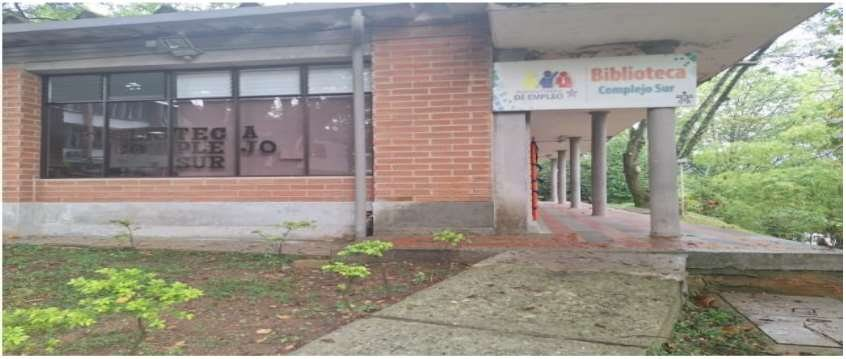
Promedio anual $6.365.116 + acceso nacional a 86.390 títulos físicos y bibliotecas digitales suscritas.
Ambientes de Formación y Dotación Tecnológica Real
Selecciona cada ambiente para inspeccionar su dotación oficial y fotografías reales (clic en cualquier foto para ampliar)
Ambiente 303 — Estudio Mac UHD
Dotación especializada de alta fidelidad cromática para diseño gráfico, diagramación editorial, edición vectorial/mapa de bits y productos multimedia:
- 24 Apple iMacs 32" UHD (disponibilidad 0,80/aprendiz).
- Mobiliario: 30 sillas ergonómicas y 24 mesas colaborativas.
- Ayudas audiovisuales: 1 Smart TV + 1 tablero acrílico.
- Condiciones físicas: Iluminación natural y artificial, aire acondicionado, vidrio templado, red LAN/WLAN dedicada.
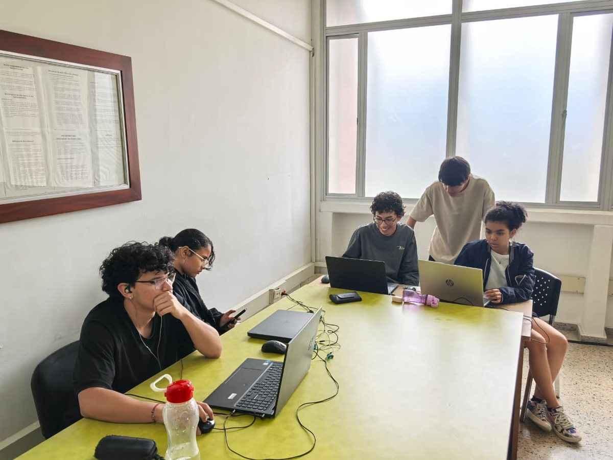
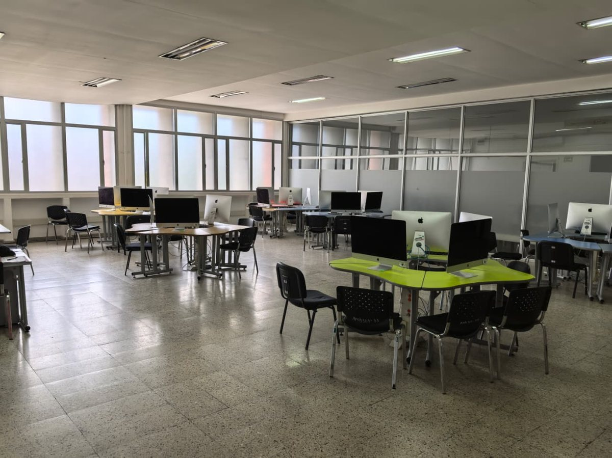
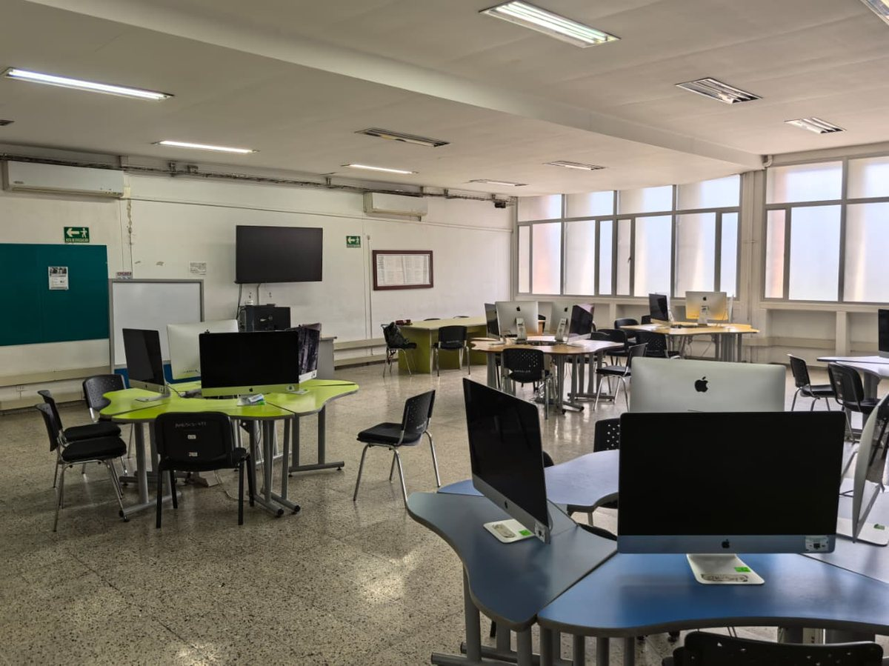
Ambiente 107 — MediaLab
Laboratorio de alto rendimiento gráfico, producción audiovisual, investigación (Semillero Clic Derecho) y renderizado:
- 11 Workstations de alto rendimiento: Alienware Aurora R16 y HP Z4 G4 con monitores ultrawide.
- Mobiliario: 30 sillas y 8 mesas amplias de producción.
- Ayudas: 1 Smart TV + 1 tablero acrílico + red regulada.
- Investigación: 30% destinación formal para proyectos SENNOVA del programa DMGV.
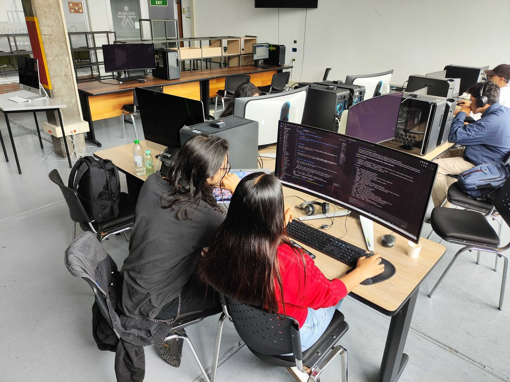
Ambiente 302 — Formación Integral
Espacio versátil para conceptualización, análisis de briefs, socialización de proyectos y desarrollo de competencias clave y transversales:
- 21 Equipos de cómputo: 10 PCs de escritorio + 11 portátiles (disponibilidad 0,70/aprendiz).
- Visualización interactiva: 1 TV Digital Táctil + tablero acrílico.
- Mobiliario: 30 sillas y 15 mesas flexibles para trabajo en equipo.
- Competencias: Inglés, Comunicación, Emprendimiento, Ética, SST, Ciencias Naturales, Investigación e Inducción.
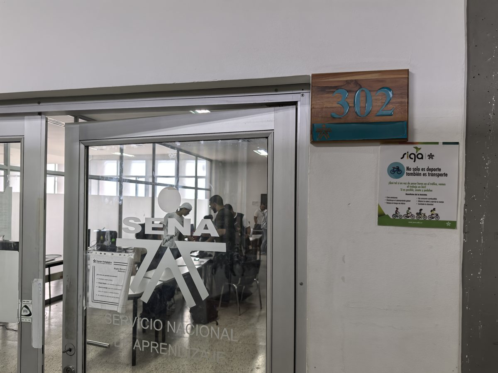
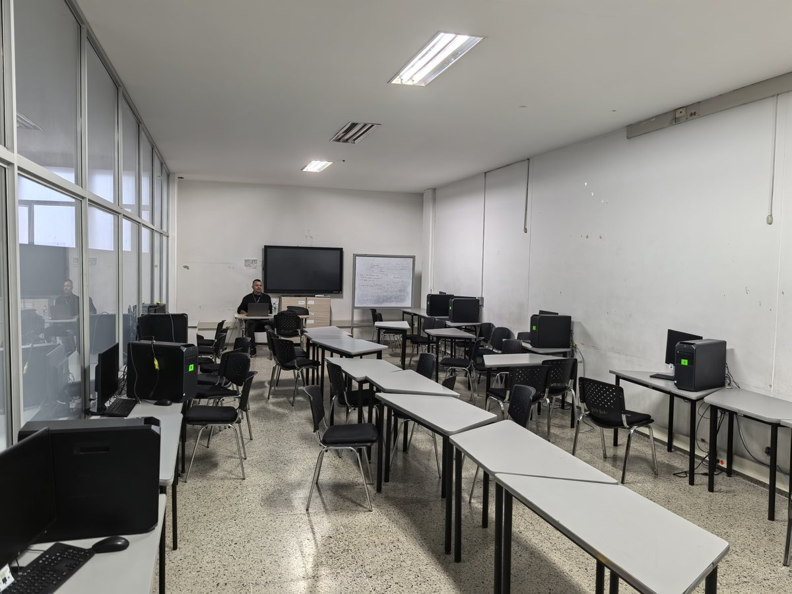
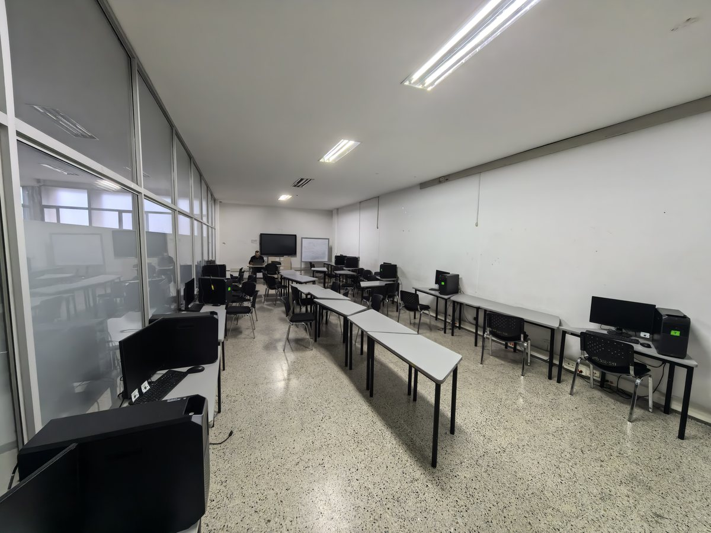
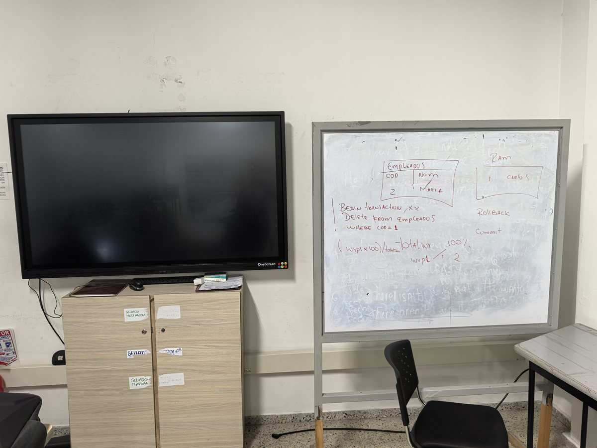
Impresoras 3D
Prototipado rápido y modelado tridimensional de piezas gráficas, dummies y estructuras de empaque.
Cortadoras Láser
Corte y grabado de precisión para prototipado de empaques, troqueles, señalética y estructuras 2D.
Scanners 3D
Captura geométrica de objetos reales para integración en entornos digitales, empaques y renderizado.
Oculus Quest 3s
Previsualización inmersiva de prototipos, interfaces espaciales y proyectos VR del Semillero Clic Derecho.
MediaLab (Ambiente 107) — Creación Visual, Interactividad e I+D+i
Escenario de convergencia entre diseño gráfico avanzado, producción audiovisual, prototipado físico-digital y Semillero Clic Derecho
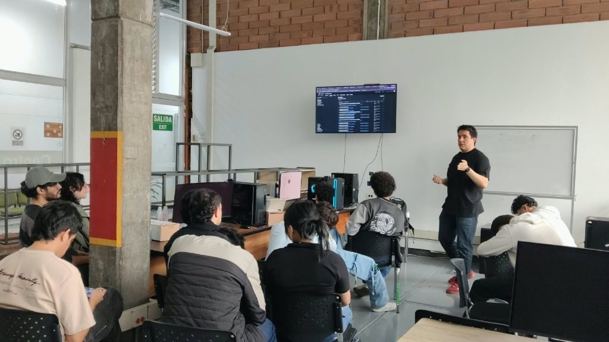
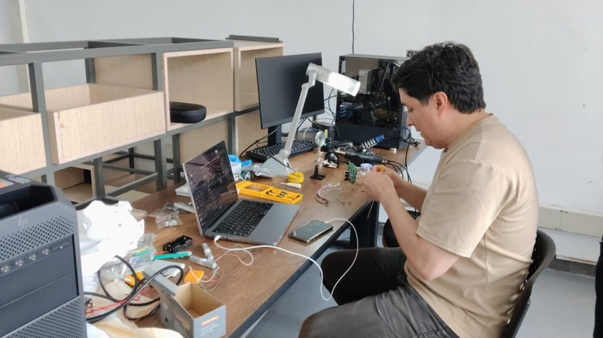
El MediaLab 107 cierra la brecha entre el aula tradicional y la industria creativa 4.0: permite que los aprendices de Desarrollo de Medios Gráficos Visuales ejecuten proyectos de alta demanda gráfica, multimedia, experiencias interactivas y prototipado real.
¿Qué competencias de DMGV se potencian aquí?
- Edición Audiovisual y Motion Graphics: Renderizado ágil y corrección de color en 11 Workstations Alienware Aurora R16 y HP Z4 G4 con monitores ultrawide.
- Diseño de Interfaces (UI/UX) e IA Aplicada: Pruebas de usabilidad, flujos creativos asistidos por IA y proyectos del Semillero Clic Derecho.
- Prototipado Físico-Digital y Empaques: Articulación directa con 4 Impresoras 3D, 2 Cortadoras Láser, 3 Scanners 3D y 3 Oculus Quest 3s para validación de empaques y experiencias inmersivas.
- Trabajo Colaborativo Real: Dinámicas tipo agencia/laboratorio con Smart TV, estaciones de hardware/electrónica creativa e iluminación natural y artificial.
Infraestructura Física y Tecnológica
Conectividad de alta disponibilidad del Complejo Sur, seguridad planta física, accesibilidad universal (Ley 1618/2013), áreas comunes y Plan de Mantenimiento y Compras 2025.
Conectividad TIC, Indicadores de Suficiencia y Seguridad Física
Arquitectura de red de alta disponibilidad, soporte ITIL 24×365 y cumplimiento integral en seguridad y emergencias
Arquitectura de Conectividad Complejo Sur Itagüí
Switch Core Huawei en MDF Complejo Sur con troncales 10GE/100GE hacia IDF del CTM (4 centros de cableado), segmentado por VLANs 100/110 (tráfico académico vs. administrativo) y salida segura por Router AR6121E + Multiservice Gateway.
Sitio Principal y Sitio Alterno con balanceadores de carga, Storage/Dataguard Replication y energía eléctrica regulada (UPS). Soporta sincronización de licencias Adobe, transferencia de archivos pesados y uso intensivo de 24 iMacs + 11 Workstations sin degradación.
23 extintores multipropósito/CO₂/agua y gabinetes contra incendio (12 adm., 7 comunes, 4 ambientes), 20 señales de riesgo eléctrico, rutas de evacuación, punto de encuentro y brigada de emergencias.
Indicadores de Suficiencia (Anexo 9_9205_2)
| Indicador Oficial de Suficiencia | Índice |
|---|---|
| Cobertura de conectividad inalámbrica en ambientes | 100 % |
| Disponibilidad / uso salas de cómputo específicas DMGV | 100 % |
| Disponibilidad / uso salas de cómputo transversales | 100 % |
| Capacidad / puestos en ambientes de formación | 80 puestos |
| Capacidad / puestos en laboratorios | 30 puestos |
| Ocupación optimizada laboratorios / talleres | 30 % / 10 % |
Soporte legal del predio: Certificado de Tradición y Libertad y Uso del Suelo del CTM Itagüí adjunto en Anexo 2_9205_Itagüí_CertTradicYlibertUsoDel Suelo.PDF.
Áreas Comunes, Accesibilidad Universal y Plan de Mantenimiento
Espacios dignos e inclusivos (Ley 1618/2013) respaldados por $2.023 millones en mantenimiento y compras 2025
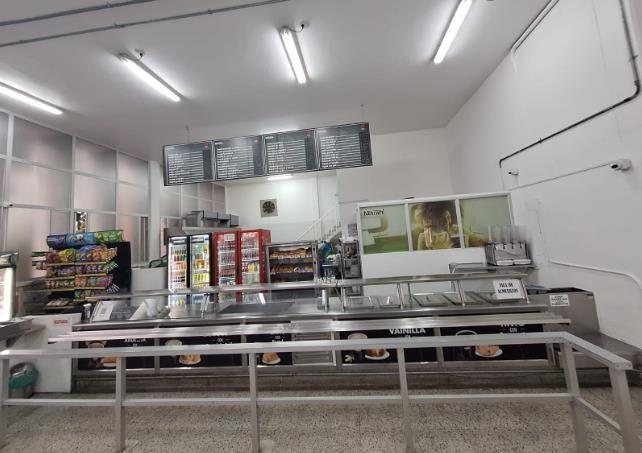
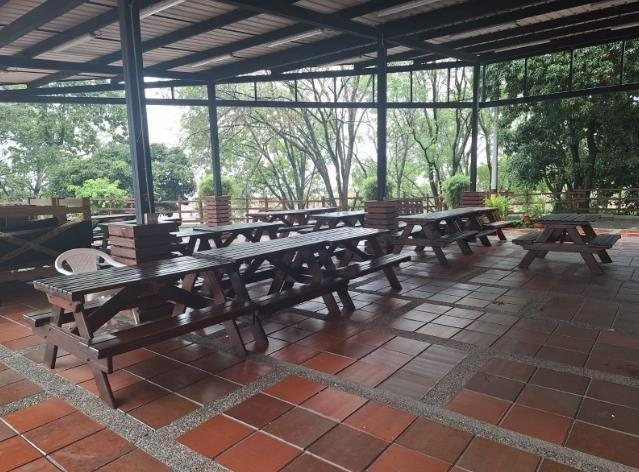
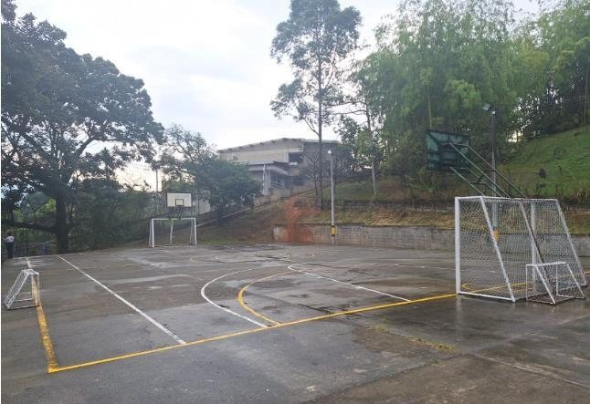
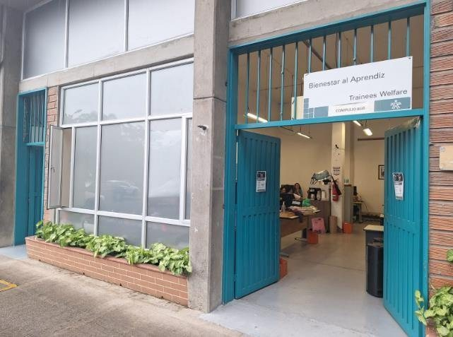
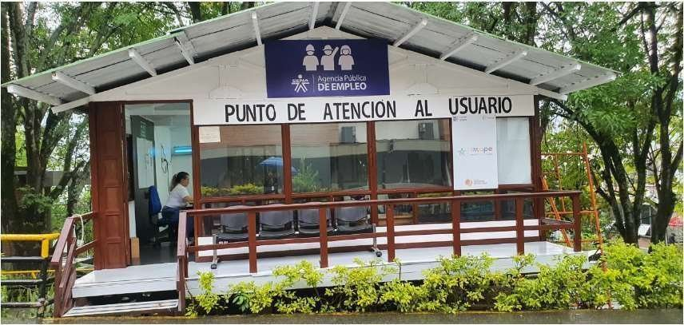
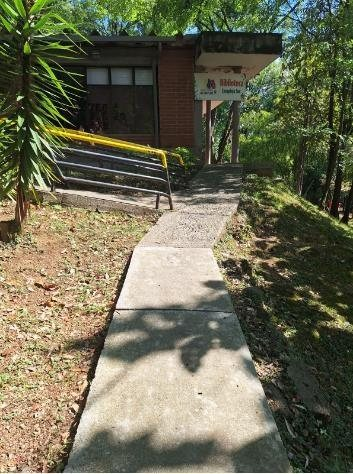
8 rampas de acceso · Ascensor con panel Braille (6 pisos) · Parqueadero demarcado · Enfermería y área segura · 2 alarmas visuales/sonoras · Intérpretes de Lengua de Señas Colombiana (LSC).
Recursos asignados SIIF (34 rubros) para sostenibilidad preventiva de infraestructura, equipos y materiales:
GIL-P-010.
Centro Tecnológico del Mobiliario — 40 Años Transformando Vidas
Muchas Gracias
El Centro Tecnológico del Mobiliario (Itagüí · Cód. 9205) demuestra solidez curricular, pertinencia socioeconómica en el Aburrá Sur, grupo de investigación MATERMOB (Cat. C) con Semillero Clic Derecho, equipo ejecutor calificado (11 instructores), dotación tecnológica especializada (24 iMacs 32" UHD + 11 Workstations MediaLab) y sostenibilidad financiera para ofertar la Tecnología en Desarrollo de Medios Gráficos Visuales.
Sede: Calle 63 # 58B-03, Barrio Calatrava, Itagüí (Antioquia)
Radicado: RD34720 · Código SOFIA: 522309 V2 · Red: Artes Gráficas
Canales SENA: www.sena.edu.co · @SENAcomunica · Línea Nacional: 018000 91 02 70